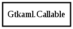

Gtkaml.Callable Reference Manual
Callable
Object Hierarchy:

Description:
public
class
Callable
wrapper for Method and Signal. Supports .name and .get_parameters
Namespace:
Gtkaml
Package:
Gtkaml
Content:
Properties:
public
Symbol
member
{
get
; }
public
string
name
{
get
; }
public
Symbol
?
parent_symbol
{
get
; }
Creation methods:
public
Callable
(
Symbol
member)
Methods:
public
List
<
Parameter
>
get_parameters
()